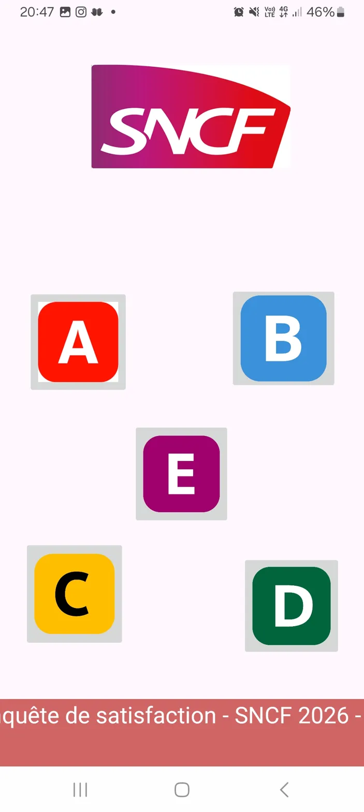

Ce projet consiste à développer une application Android simulant une enquête de satisfaction destinée aux voyageurs du réseau RER de la SNCF. L'utilisateur répond à des questions à choix multiples en chosissant le RER auquel les voyageurs souhaitent donner leur avis : A, B, C, D et E.